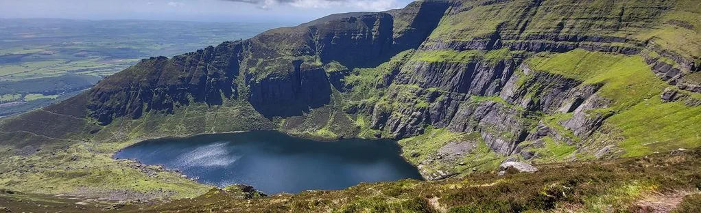
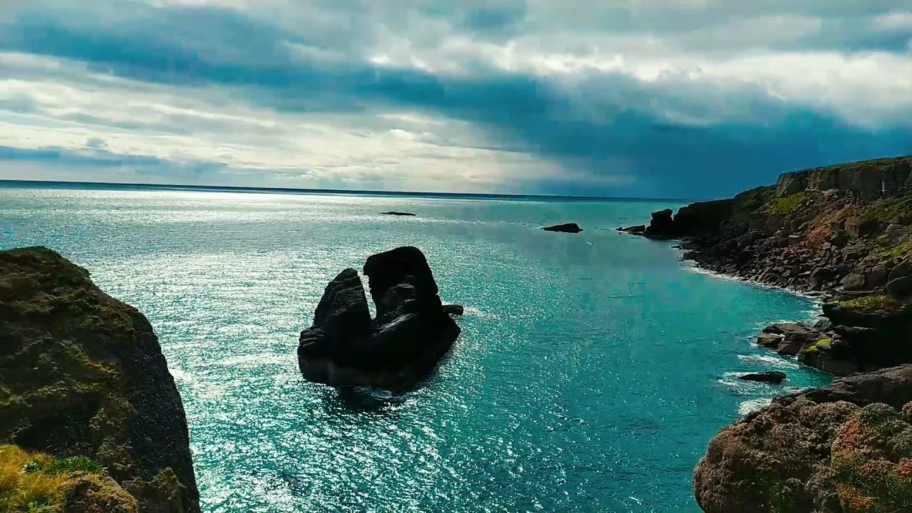
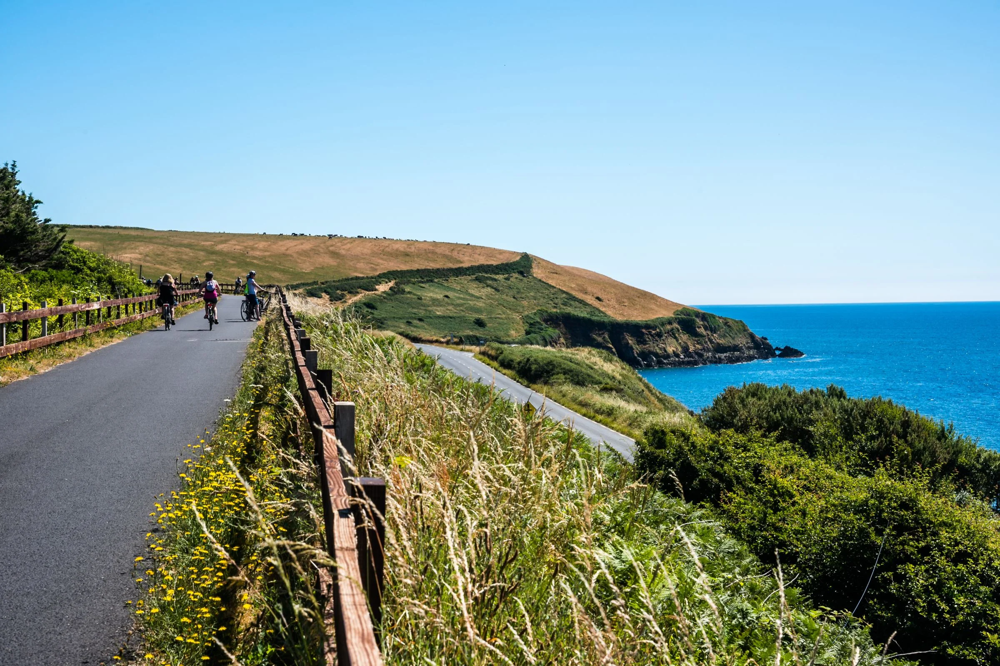
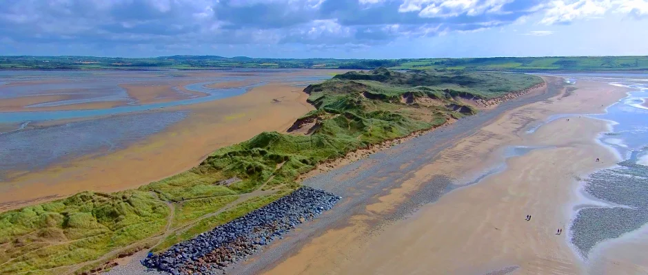
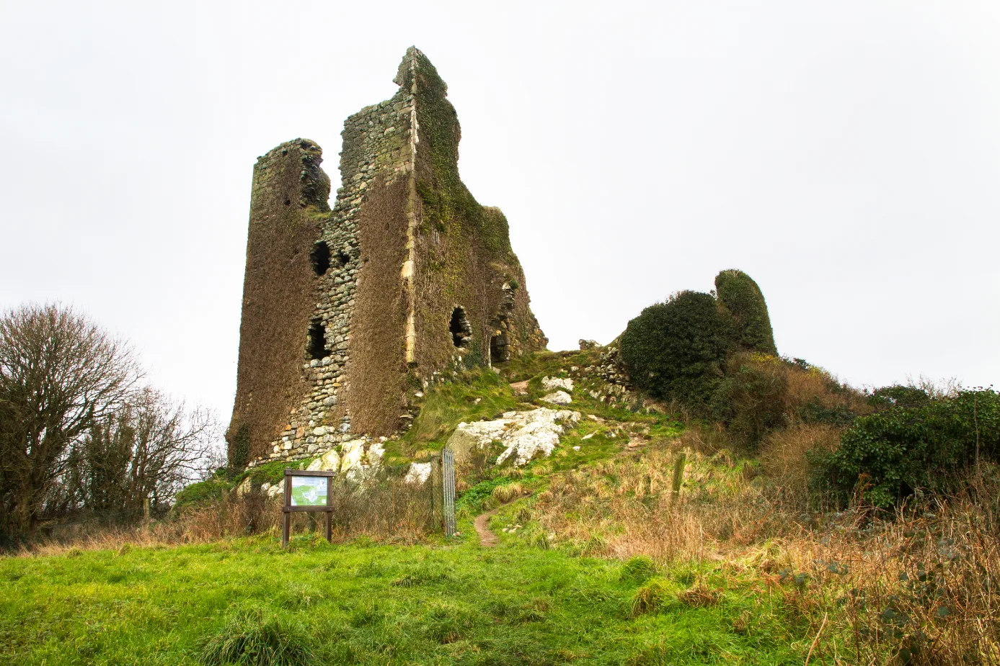

On the hunt for trails and scenic views in Waterford? Look no further!
No matter what you're looking for, you can find a huge range of trails in Waterford to suit you.
-
1. Coumshingaun Lough
This trail is one our favourites, the view from above is amazing. It is recommended to have some hiking experience before attempting to do this trail as it is a very strenuous route. It is also recommended that you download the offline map as this route is not signposted very well. You should notdo this trail unless you have thoroughly planned beforehand. 
-
2. Dunmore East Cliff Walk
This clifftop trail is most certainly up there in our top 5 for Waterford. It is well maintained and easily accessible (to most). This route has some of the most breathtaking views of the Waterford coastline. Please be aware that during the wetter months it can get really muddy so it's best to come prepared wearing the appropiate footwear. 
-
3. Waterford Greenway
The Waterford Greenway also known as the 'Déise Greenway' is 45.2km long (Waterford to Dungarvan). This is a popular trail for walking, running or cycling. It is very simple to follow too. The greenway takes you to some of Ireland's most interesting historic sites. These include Viking sites, medieval ruins, Norman castles, old railway stations, famine workhouses and an Ice Age rock. 
-
4. Tramore Sand Dunes
The Tramore Sand Dunes Walk/Tramore Strand Loop is 7.4km long. It is considered to be an easy enough route too. The sand dunes in Tramore are some of the highest in Ireland, backed by a salt marsh and is home to some rare seaside plants and interesting wildlife. The Back Strand is a bird sanctuary and at low tide you will see many wading birds feeding on the sand banks 
-
5. Anne Valley
The Anne Valley Walk was developed by the local landowners and community. The walk is fully accessible to those with reduced mobility, including wheelchairs, buggies etc. It follows the Anne river flowing through protected wildlife areas of forest and marshland. About halfway between Dunhill and Annestown coast on this route you will see the stunning views of Dunhill Castle. 